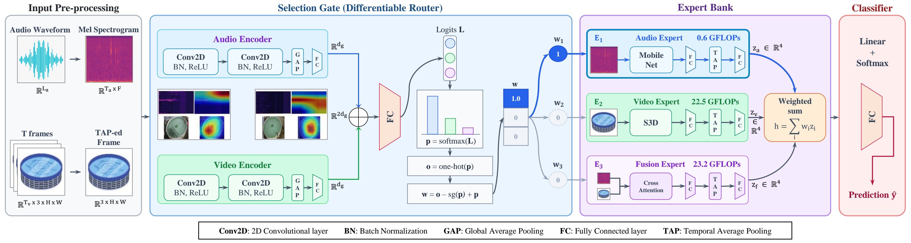
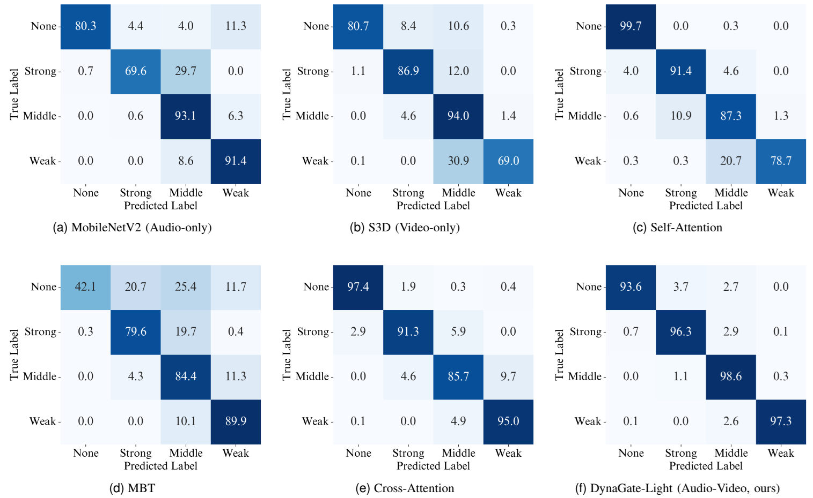
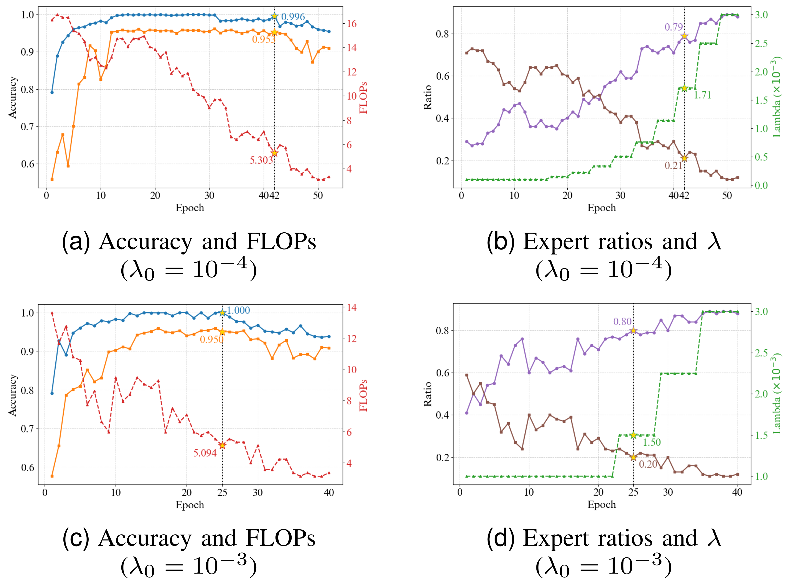
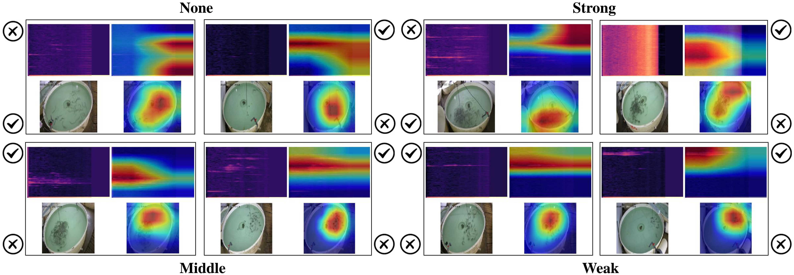
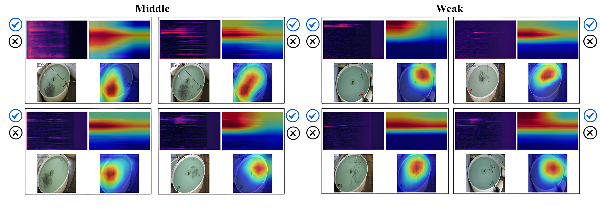
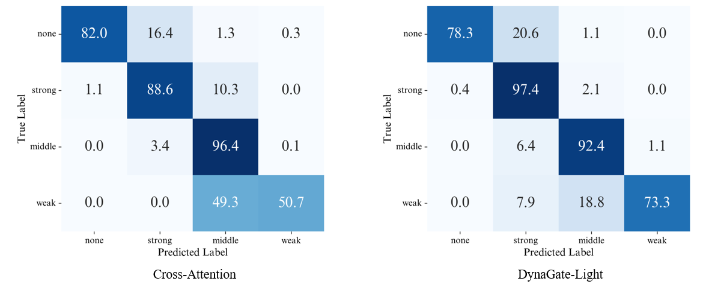
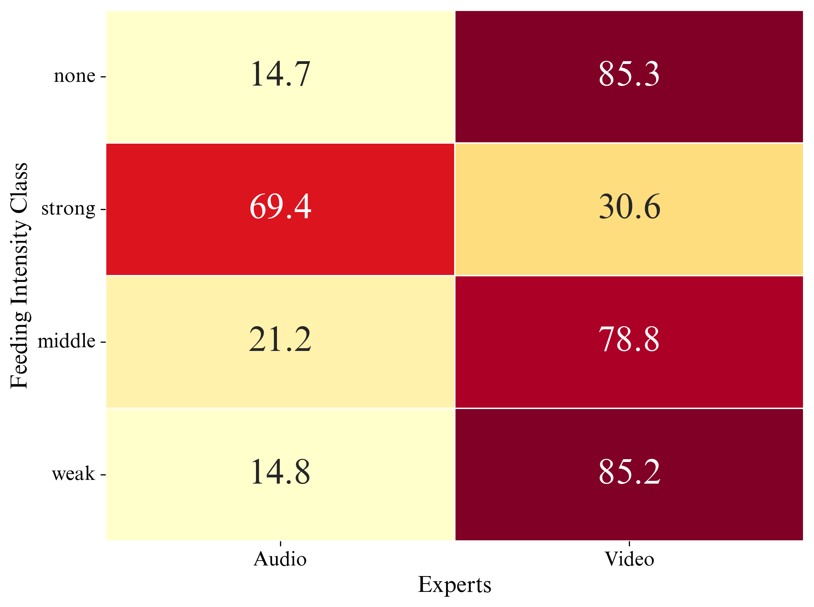
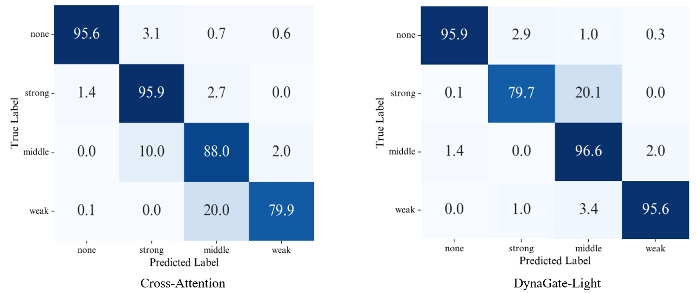
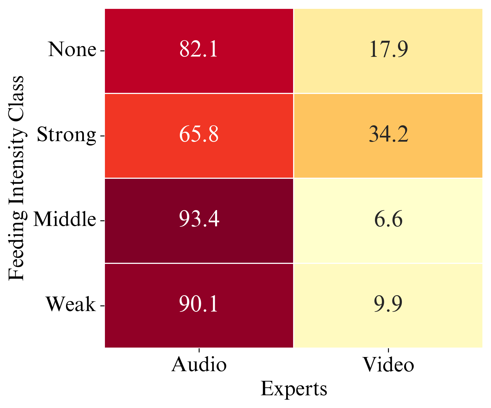

DynaGate-FFIA
Dynamic Audio-Visual Routing for Efficient Fish Feeding Assessment
A lightweight dynamic routing framework that adaptively selects audio, video, or fusion experts for efficient and robust fish feeding intensity assessment.
Efficient fish feeding assessment for real-world aquaculture.
Audio-visual learning can improve fish feeding intensity assessment (FFIA) by exploiting complementary acoustic and visual cues. However, existing multimodal approaches typically process both modalities for every sample, resulting in fixed computational cost even when a single modality is sufficient, while degraded inputs can adversely affect static fusion. We propose DynaGate-FFIA, a dynamic expert-routing framework for sample-adaptive audio-visual computation.
A lightweight convolutional neural network gate examines low-cost audio and visual representations before the main backbones and dynamically selects among modality-specific and audio-visual fusion experts. The routing policy is trained end-to-end using a FLOPs-aware objective, together with IncreaseRegOnPlateau, an adaptive regularization strategy that progressively encourages lower-cost routing as validation performance stabilizes.
Experiments on the AV-FFIA dataset show that DynaGate-Light achieves 96.4% accuracy with 5.29 GFLOPs, outperforming the strongest evaluated static fusion baseline by 4.0 percentage points while reducing computation from 23.23 to 5.29 GFLOPs.
Under modality-specific corruption, dynamic routing improves accuracy over static fusion by up to 6.1 and 4.8 percentage points for audio and visual corruption, respectively. Routing analysis further reveals input-dependent modality specialization and adaptive shifts toward the less corrupted modality. These results show that dynamically allocating computation across modalities, rather than uniformly processing all available inputs, can jointly improve accuracy, efficiency, and robustness in audio-visual FFIA.
Why not use expensive multimodal fusion for every sample?
Video
Visual observations reveal fish aggregation and surface activity.
Audio
Feeding sounds can provide useful information even when visual conditions are poor.
Static Fusion
Static multimodal models execute expensive computation even when one modality is already sufficient. Because both modalities are always fused, severe corruption in either modality can contaminate the fused representation and degrade prediction performance.
Dynamic expert routing for efficient fish feeding assessment.

Overall architecture of the proposed DynaGate-FFIA framework.
Optimizing accuracy and computational efficiency together.
The model is trained end-to-end with cross-entropy loss \(\mathcal{L}_{\mathrm{CE}}\). To encourage routing to cheaper experts, we apply a FLOPs-aware regularization term:
Here, \(\mathbf{f}=[f_a,f_v,f_f]\) contains the pre-measured GFLOPs of the audio, video, and fusion experts, while \(\lambda\) controls the accuracy-efficiency trade-off. Static baselines use only the cross-entropy loss.
Progressively encouraging cheaper routing
The progressive penalty encourages the gate to favor the lower-cost experts when validation accuracy plateaus, while maintaining the balance between accuracy and efficiency.
Evaluation on the AV-FFIA benchmark.
Implementation
Higher accuracy with significantly lower computation.
Test Accuracy

Confusion matrices of the five baseline models from Cui et al. and our proposed DynaGate-Light (2-branch Audio-Video) model on the AV-FFIA test set. All values are row-normalized percentages.

Training dynamics of the DynaGate-FFIA framework under the proposed IncreaseRegOnPlateau scheduler across two different initializations (\(\lambda_{\mathrm{init}}=10^{-4}\) and \(10^{-3}\)). The left column plots show the relationship between training/validation accuracy and validation FLOPs. The right column plots detail the gating behavior, showing how step-wise increases in \(\lambda\) directly force the routing mechanism to heavily favor the lightweight audio expert.

Qualitative visualization of representative samples from the AV-FFIA test set across the four feeding-intensity classes. For each sample, the audio spectrogram and its corresponding activation map are shown in the top row, while the video frame and its corresponding activation map are shown in the bottom row. A tick indicates a selected modality, while a cross indicates an unselected modality.

Qualitative examples from the Middle and Weak classes of the AV-FFIA test set. For each sample, the audio spectrogram and its corresponding Grad-CAM visualization are shown in the top row, while the video frame and its corresponding Grad-CAM visualization are shown in the bottom row. Although both modalities have clear discriminative patterns, the audio modality is selected for all shown samples. A tick indicates a selected modality, while a cross indicates an unselected modality.
5.29 GFLOPs
DynaGate-Light uses a fraction of the computation required by the strongest evaluated static fusion baseline.
Most samples can be handled by the cheaper audio expert.
The reported routing distribution is 79.1% audio and 20.9% video for the two-branch model.
The gate adapts when a modality becomes unreliable.
Dynamic routing helps isolate corrupted modalities instead of forcing noisy information into a static multimodal fusion pipeline.

Confusion matrices

CNN-gate expert selection distribution

Confusion matrices

CNN-gate expert selection distribution
Cite this work
@article{dynagateffia,
title={DynaGate-FFIA: Dynamic Audio-Visual Routing for Efficient Fish Feeding Assessment},
author={Minh D. Nguyen and Ba Hung Ngo and Cuong D. Do and Van-Dinh Nguyen},
journal={arXiv preprint arXiv:XXXX.XXXXX},
year={2026}
}